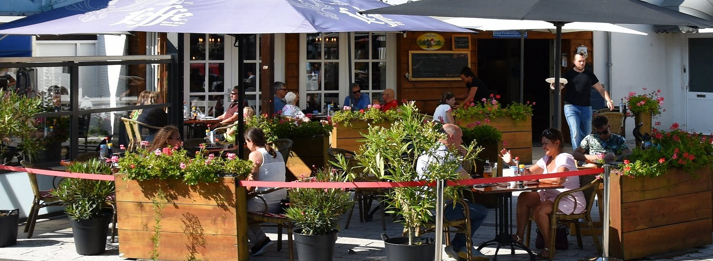
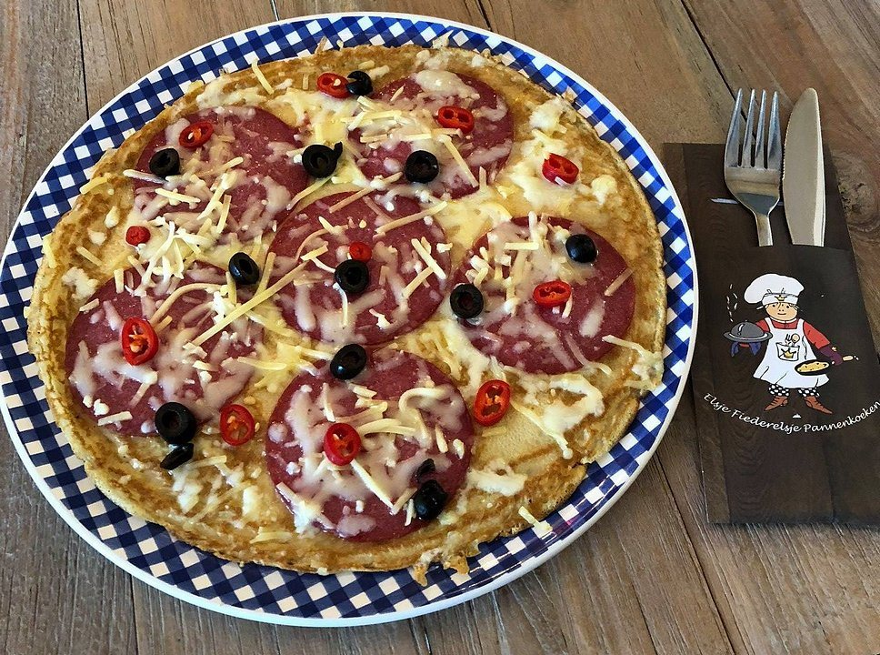
Ambachtelijke pannenkoeken aan het Spuiplein
Meer dan 50 pannenkoeken, vers gebakken in eigen keuken, en natuurlijk poffertjes, wafels en zelfgemaakte soep. Binnen of op ons terras op het zuiden, midden in Breskens.
"Een van mijn dochters zei de beste Pannenkoek ooit. Dat zegt genoeg."Ria Vossepoel, op Google
Van de smulkaart
Zoet, hartig of iets speciaals: bij ons kunt u terecht voor meer dan 50 verschillende pannenkoeken. Ook voor de lunch.
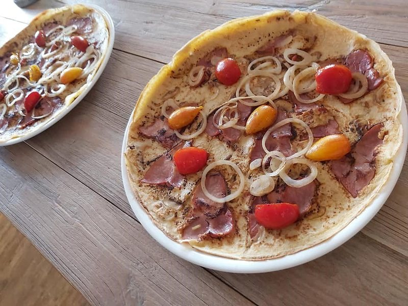
Hartige pannenkoeken
vanaf € 10,20Van spek en kaas tot onze onvervalste boerenpannenkoek.
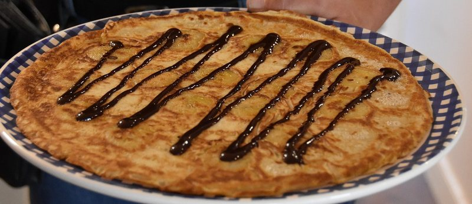
Zoete pannenkoeken
vanaf € 7,90Appel, banaan, Nutella, boerenjongens of vers fruit.
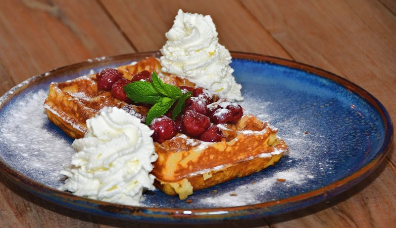
Wafels & poffertjes
vanaf € 5,70Vers gebakken, tot 16.00 uur (of later, als het beslag nog niet op is).
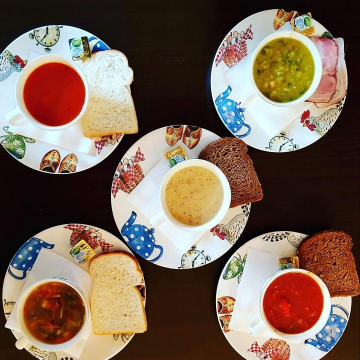
Soep & lunch
lunchmenu € 13,00Verse tomaten- of mosterdsoep met een kleine pannenkoek naar keuze.
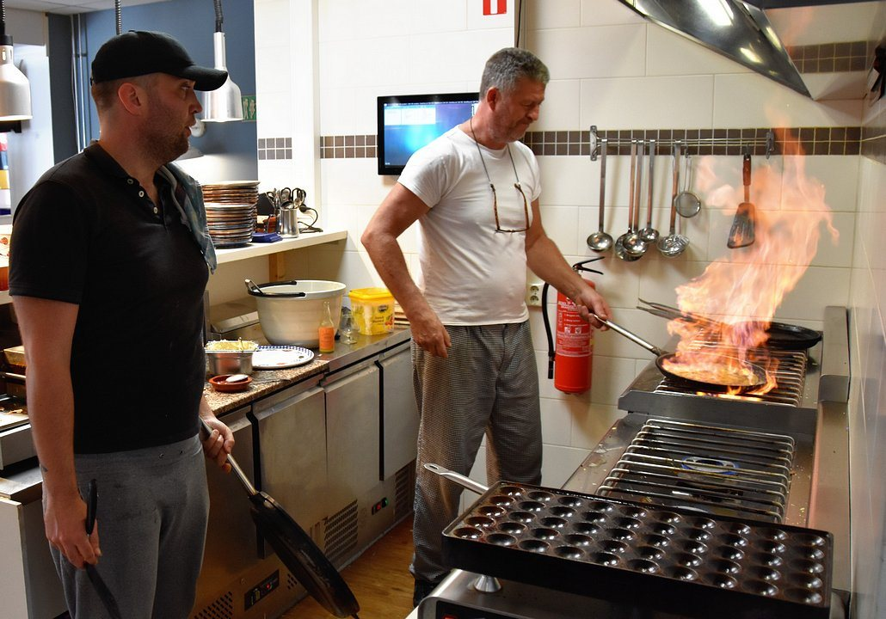
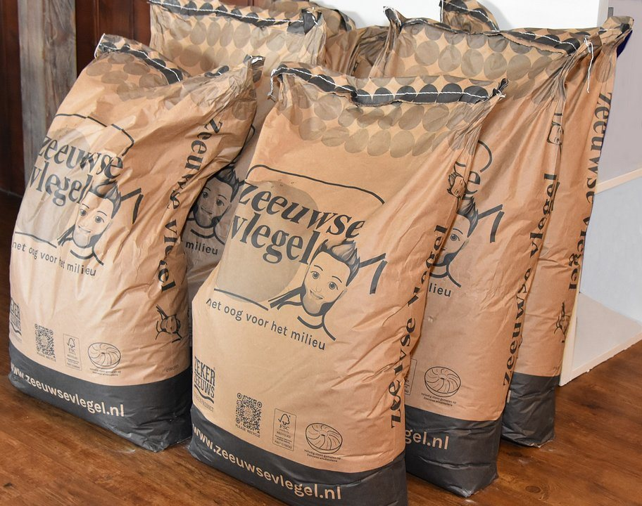
Vers gemaakt, in eigen keuken
Voor onze pannenkoeken gebruiken we meel van de Zeeuwse Vlegel: lokale tarwe, verbouwd met oog voor het milieu en gemalen in de molen van Hoek.
We houden het bewust bij pannenkoeken, wafels, poffertjes en zelfgemaakte soepen. Zo kunnen we daar iets speciaals van maken.
Een allergie? Wij bakken er een voor u
We maken ook pannenkoeken zonder:
- gluten
- lactose
- kippenei
Laat het ons even weten als u reserveert, dan zorgen we dat het klaarstaat.
ReserverenWat onze gasten zeggen
Een van mijn dochters zei de beste Pannenkoek ooit. Dat zegt genoeg. We vonden het gezellig en hele vriendelijke bediening.Ria VossepoelGoogle
Echte ambachtelijk pannekoeken! Zeker een aanrader. Uitgebreide kaart met zowel zoet als hartige pannekoeken. Gezellige medewerkers.Madelon Janssen-MiddelkoopGoogle
Gezellig plaatsje! Ook voor mensen met glutenintolerantie, zeer lekkere glutenvrije pannenkoeken beschikbaarJasper VannesteGoogle
Goede en snelle service. Heerlijke pannekoeken en alles zelf aan te passen naar eigen wens!Dennis RaaymanGoogle
Binnen of op het terras
Ons terras ligt op het zuiden, aan het Spuiplein. Ideaal om even uit te blazen na een fietstocht of een wandeling langs de haven.
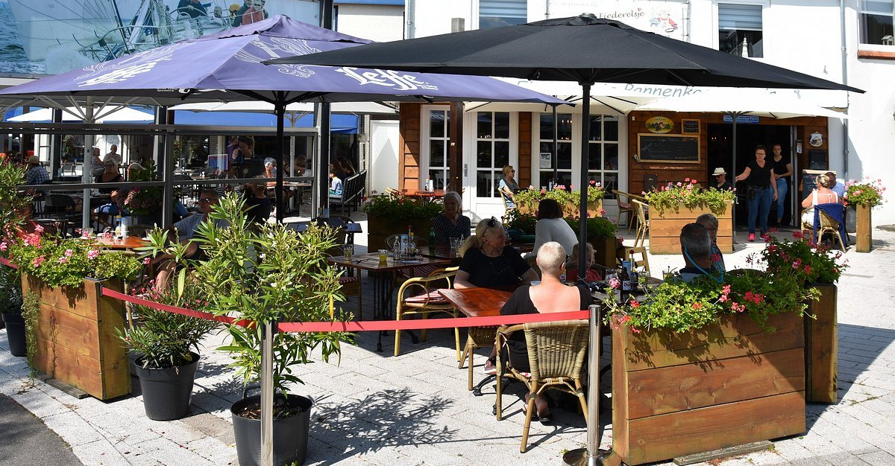
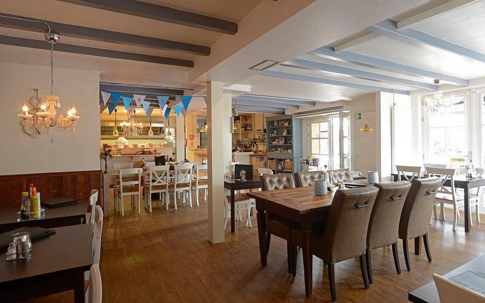
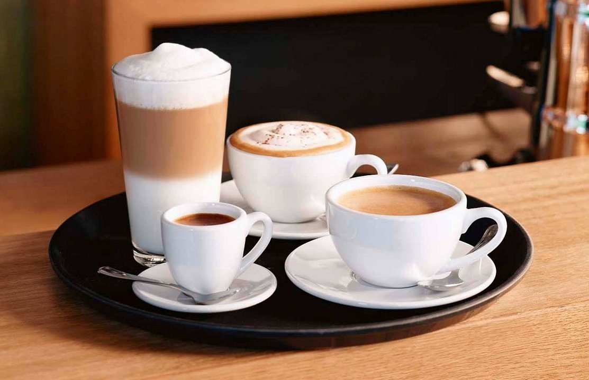
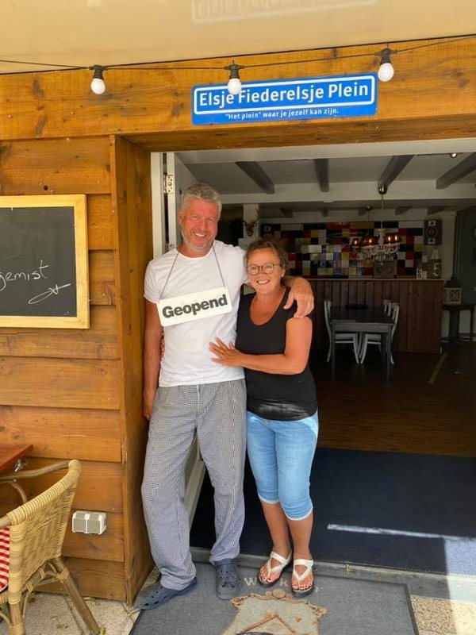
Een plek voor oud en jong
Elsje Fiederelsje is een pannenkoekenhuis waar oud en jong graag komt. Maar ook een plek waar mensen met een beperking zich veilig genoeg voelen om op hun eigen manier mee te draaien, met begeleiding die bij hen past.
Voor de kinderen liggen er kleurboekjes klaar, en bij warm weer zorgen de fonteinen op het Spuiplein voor de nodige pret. Zo kunnen de ouders ook genieten.
"Met ons team staan we graag voor u klaar!"
Els & Jurgen
Wij zoeken personeel
Bediening voor weekenden en vakanties. Ervaring is mooi meegenomen, maar alles is te leren.
Reserveren
Bel ons voor een tafel. Glutenvrij, lactosevrij of zonder kippenei? Geef het dan meteen even door.
Bel ons voor een tafel
Of kom gewoon langs aan het Spuiplein.
Openingstijden
September t/m juni
Juli en augustus
In juli en augustus sluit de keuken om 19.30 uur. Valt een Nederlandse of Belgische feestdag op onze sluitingsdag, dan zijn we wel open.